Trustee¶
Os trustees são responsáveis por garantir a correta apuração do resultado da eleição. Deve haver sempre pelo menos 2 trustees por eleição, para garantir a integridade do resultado desta.
Aceder à Página de Trustee¶
Se for escolhido como trustee de uma eleição, o administrador desta deverá lhe enviar um e-mail com um link para aceder à página principal desta.
- Aceda à página da eleição, e depois entre na página de trustees da eleição (Current Trustees).
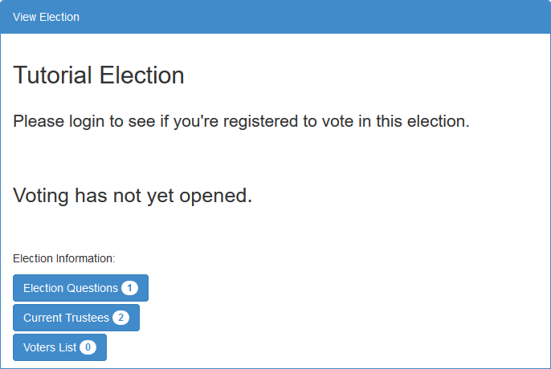
- Clique em Your Trustee Homepage (ou Click here to login, se ainda não estiver autenticado).
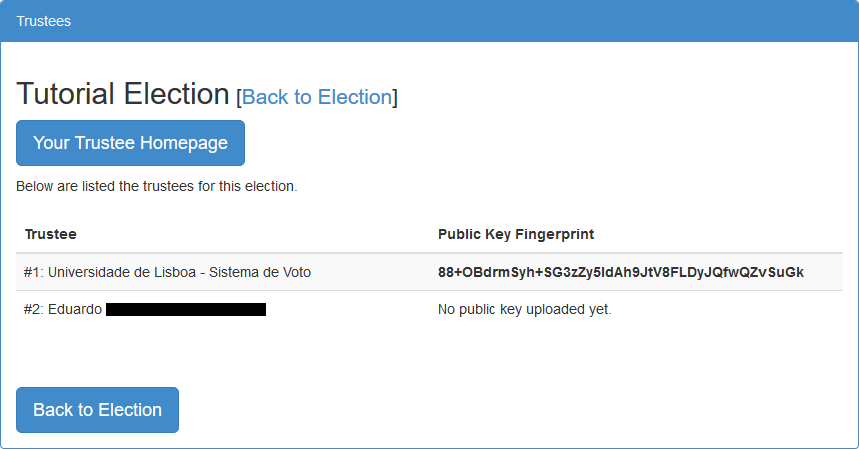
- Esta é a sua página de trustee. Aqui poderá gerar o seu par de chaves, enviar a sua chave pública para o servidor, verificar a validez da sua chave secreta e desencriptar o resultado da eleição.
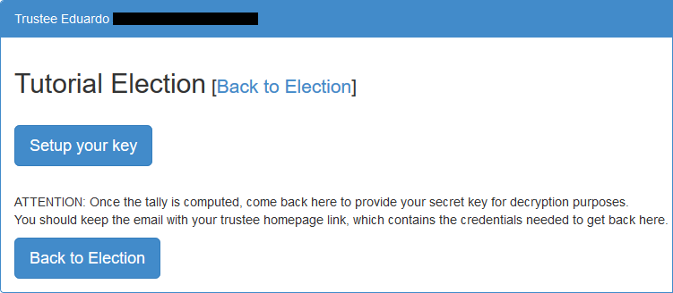
Gerar Par de Chaves¶
- Aceda à sua página de trustee e clique em Setup Your Key.
- Clique em Generate Election Keys para gerar o par de chaves (secreta e pública). Caso já tenha um par de chaves gerado, pode-o reutilizar (reuse it).
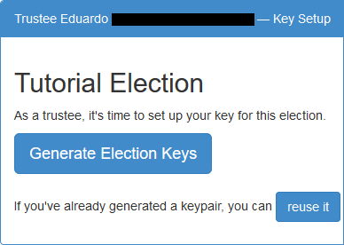
- [Opcional] Se reutilizar um par de chaves, basta colar a chave secreta na caixa de texto e clicar em Reuse e de seguida em Upload your public key.
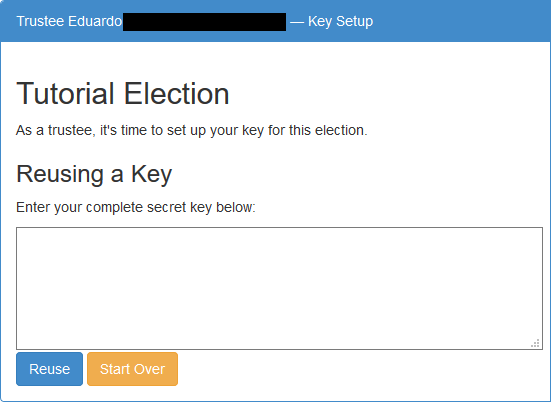
- Caso tenha gerado o par de chaves, clique em Show my secret key para visualizar a chave secreta.
- Pode a qualquer momento recomeçar o processo de geração de chaves. Para tar basta clicar em Start Over.
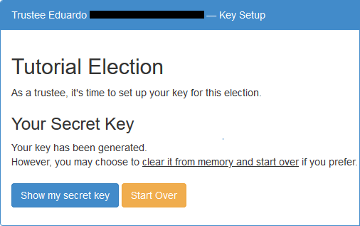
- Aqui pode ver a sua chave secreta. Faça download desta para um ficheiro (Download Private Key to a File) e guarde-o num ou mais sítios seguros.
- NÃO PERCA A CHAVE SECRETA! Caso a perca, será IMPOSSÍVEL desencriptar o resultado da eleição.
- Após guardar a chave secreta clique em I have saved the key. Let's move on.
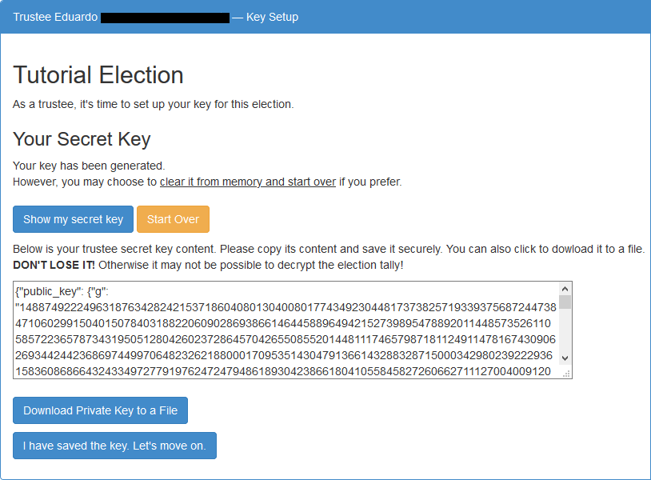
- Após basta dar upload da chave pública para o servidor, de modo a tornar possível ao administrador iniciar a eleição. Para tal clique em Upload your public key.
- Também lhe é aqui mostrada a sua chave pública, de modo a que possa confirmar que a sua chave pública é corretamente guardada no servidor. Pode verificar tal na página de trustees da eleição.
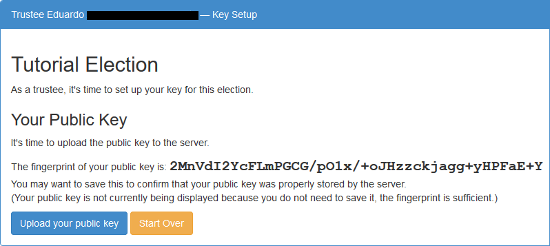
- Após dar upload da sua chave pública, deverá guardar a sua chave secreta num local seguro para que seja possível desencriptar o resultado da eleição.
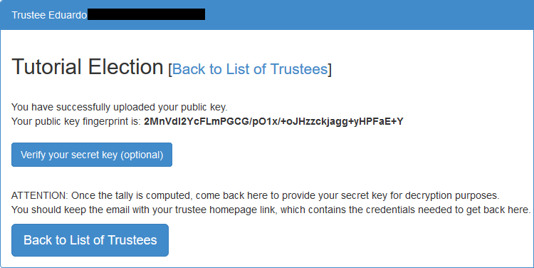
Verificar Chave Secreta¶
Se o desejar, pode verificar a qualquer momento se a chave secreta que guardou é válida.
- Clique em Verify your secret key (optional).
- Cole a sua chave secreta na caixa de texto e de seguida clique em Check.
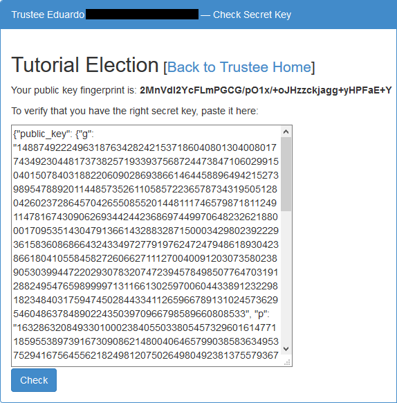
- Se a sua chave secreta corresponder à sua chave pública, aparecerá a seguinte mensagem.
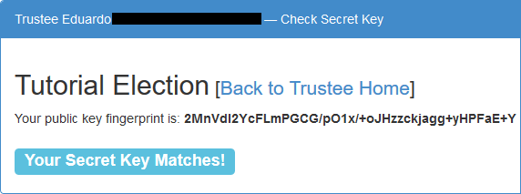
- Caso contrário, aparecerá uma mensagem a informar que a chave é inválida. Tente de novo, e caso a mensagem persista contacte o administrador de eleição.
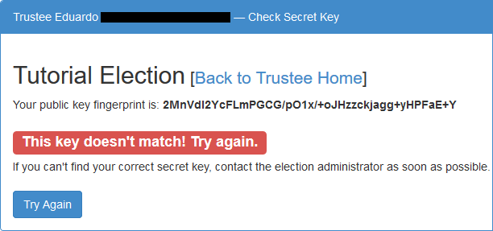
Desencriptar Resultado¶
- Após terminar o período de voto, aceda à sua página de trustee e clique em Decrypt with your key.
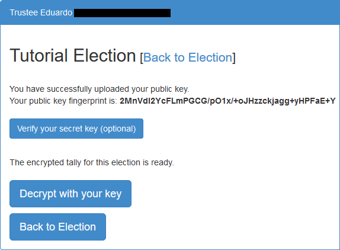
- Cole a sua chave secreta previamente guardada na caixa de texto para gerar os factores de desencriptação.
- Pode realizar este passo sem estar ligado à internet, se assim o preferir.
- Clique em Generate partial decryption para os gerar.
- Caso já tenha gerado os factores de desencriptação, clique em Skip to the Second Step.
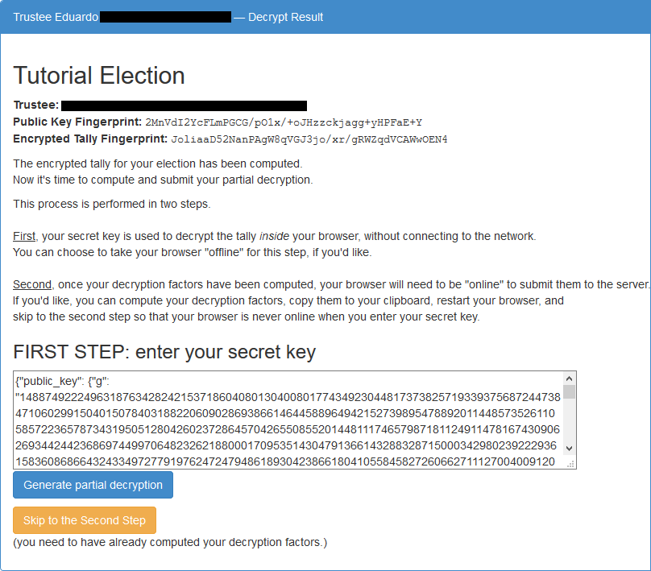
- Aparecerão numa nova caixa de texto os factores de desencriptação gerados. Pode enviá-los para o servidor carregando em Upload decryption factors to server.
- Caso tenha saltado o passo anterior, terá de colar primeiro os factores de desencriptação na caixa de texto.
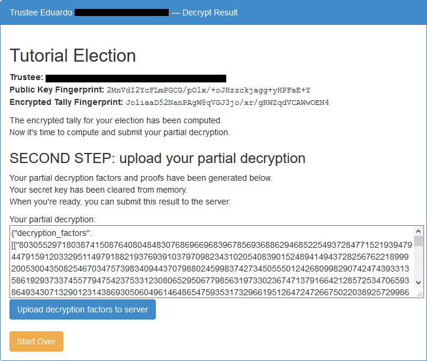
- Feito! O seu papel de trustee nesta eleição terminou.
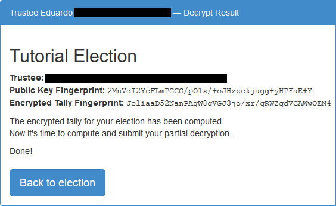